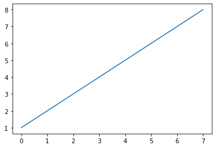
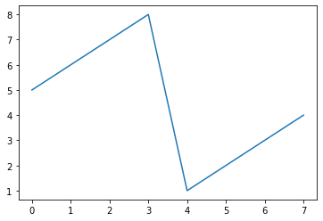
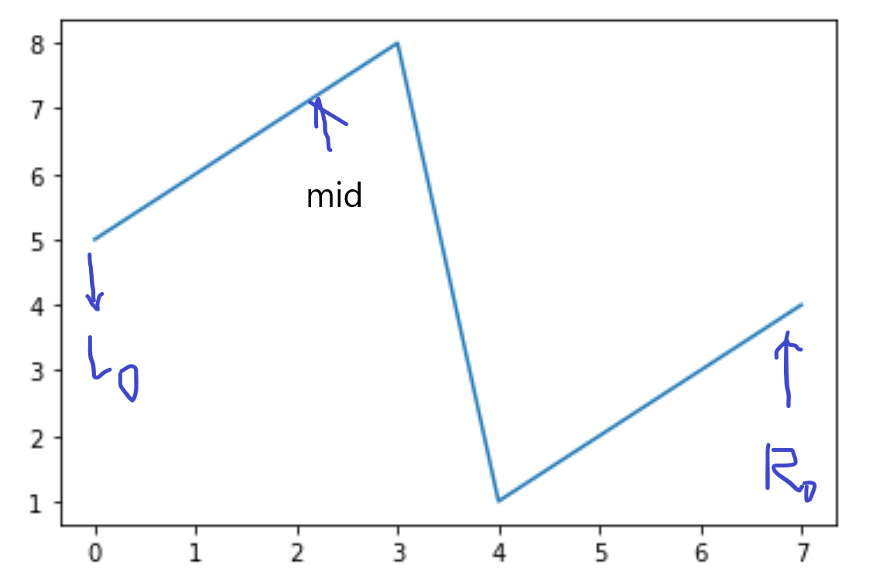
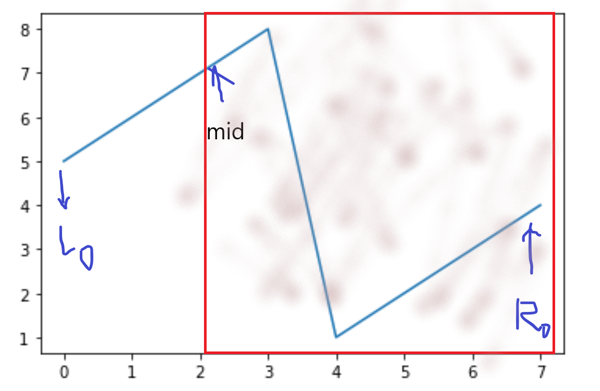
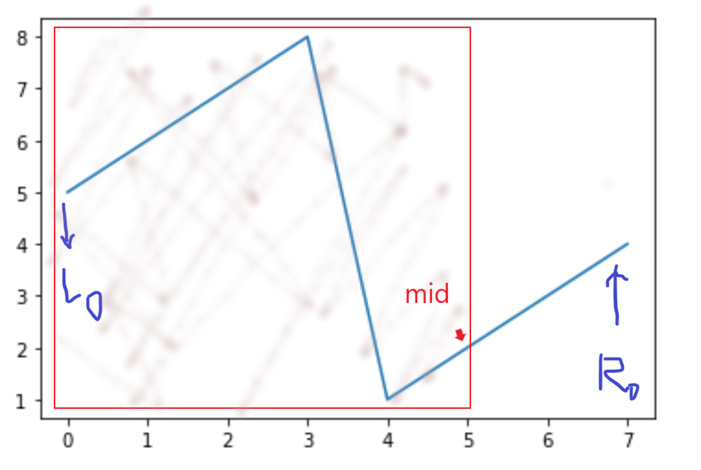
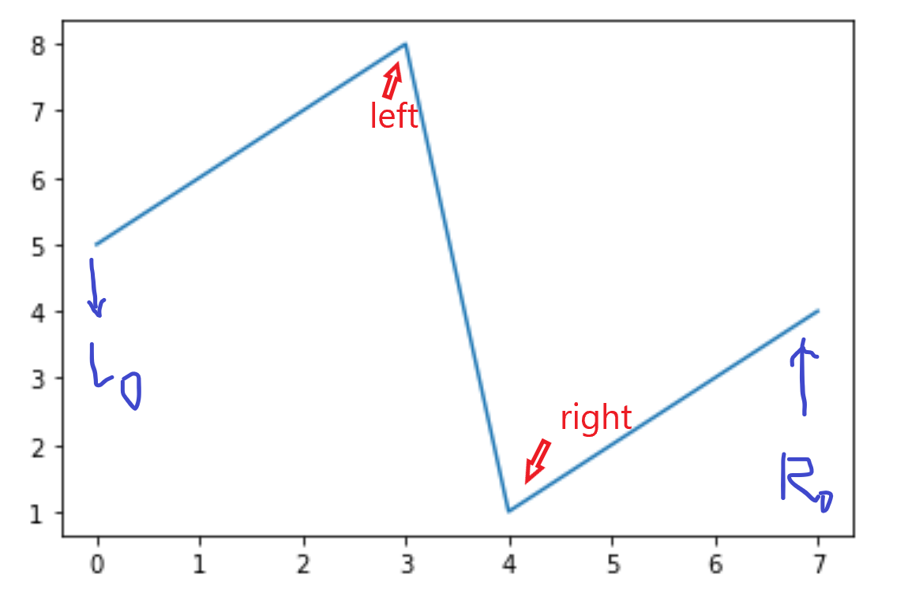

leetcode 33引起的二分搜索思考
由二分引发的血案。
前段时间做过一道二分的变体，leetcode 33, 对里面一个用二分搜索来搜shifted的位置的方法印象很深。
顺便提一下，其实我觉得大部分人对于二分的理解应该是不够的，结果就是手写的时候被各种edge case卡到（包括我），一个比较好的理解二分搜索的文章在这里
对于一个顺序被shift过的排序arr，其样子应该是以下几种情况之一：
- 1234567
- 2345671
- 3456712
- 4567123
- 5671234
- 6712345
- 7123456
观察上述数列，我们可以认识到一件事情当最左边的数字小于最右边的时候，中间的数列必然是连续上升的
这个性质是因为原数组的上升特性导致的，如图：
1 | a=[1, 2, 3, 4, 5, 6, 7, 8] |

1 | def shift(arr,n): |

以上是shift()过后的图形。
通过脑补我们可以认识到，任何的平移都不可能改变这个数组的上述性质。然后用这个特质，我们就可以对shift过的数组进行二分搜索，找出原来数组的开头在哪里。
那么如果我们把left设为$0$, right设为$arr.length-1$，mid为left+(right-left)//2, 那么就有以下情况：
arr[left]<arr[mid]<arr[right]arr[right]<arr[left]<arr[mid]arr[mid]<arr[right]<arr[left]
可以思考一下为什么没有其他情况
对上述情况进行讨论，如果说一开始是第一种情况，那我们很明显就能发下这个数组的shift value是0。
对于第二种情况，也就是中间值大于左边值，那么我们找到的这个mid肯定在一开始的头前面，差不多是如下的位置：

那在这种情况下，我们只需要对$[mid,R_0]$再次搜索就好，如图：

那么，如果是第三种情况，即：arr[mid]<arr[right]<arr[left]呢？
类似的，我们可以知道我们的搜索范围是这种情况：

那我们下一次搜索的范围就是：$[L_0,mid ]$
这种搜索最后将会收敛于一种情况, 即$[left,left+1]$(或者$[right-1,right]$),在这个时候做一个特殊判断就行了。

总结
我们将一个shift过的数组分为两个区间
- $[L_0,left]$, 这个区间中所有的数字大于$arr[right]$
- $[right,R_0]$, 这个区间中的所有数字大于等于$arr[right]$,小于等于$arr[R_0]$
- 那么显然，当left+1=right的时候整个数组被分配完毕，我们要找的就是这个时候的$right$了
演示代码：
1 | def shift(arr,n): |
然后写完这篇以后去用py重新试了leetcode 33（刚学，写得丑轻拍）, 被edge case卡成傻逼……最后就small case暴力解了(你list里找一个东西竟然可以报exception我是真没脾气（逃）)
1 | class Solution(object): |